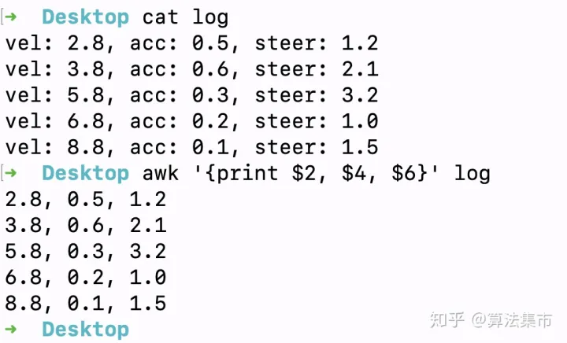
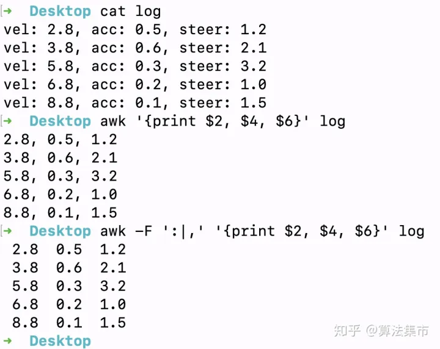
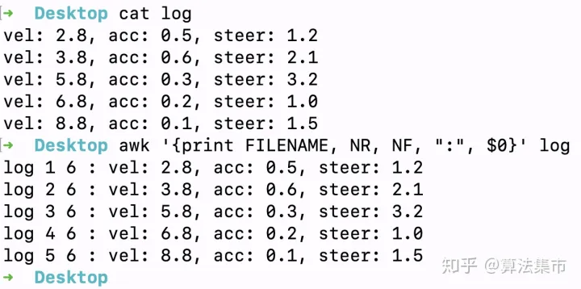
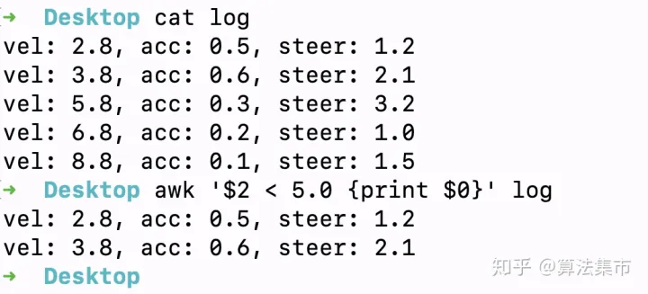
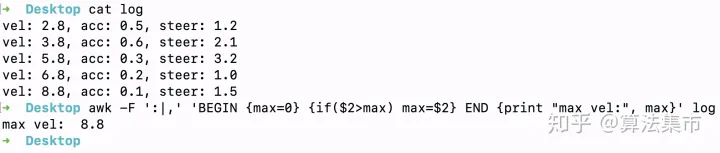
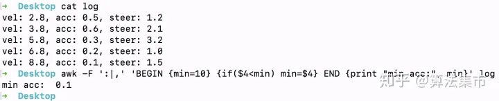
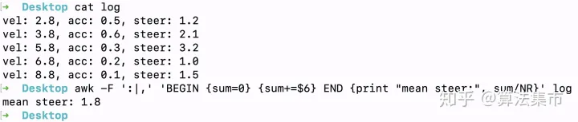
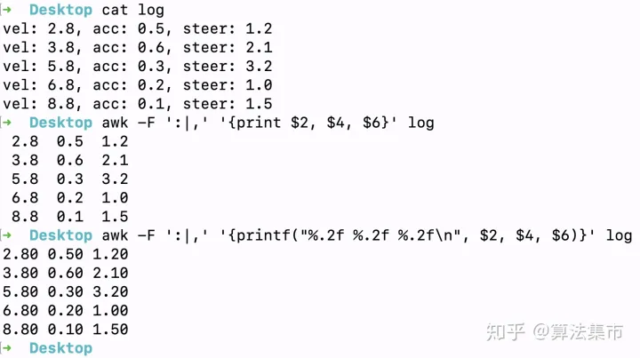
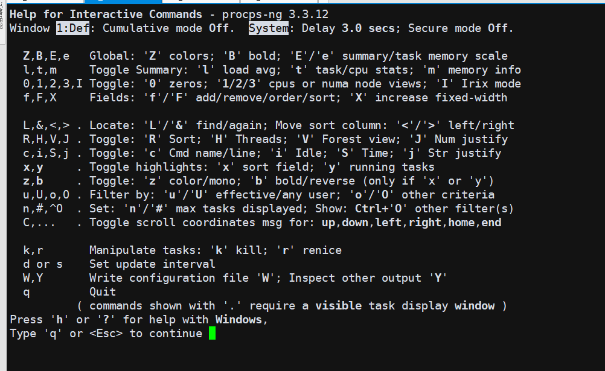
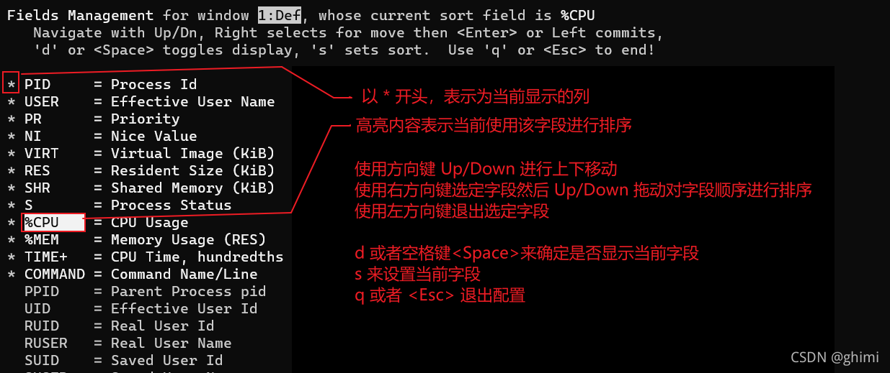

README¶
常用Linux命令备注
lsof¶
lsof（list open files）是一个列出当前系统打开文件的工具
lsof | grep文件名
lsof
which httpd//查看哪个进程在使用apache的可执行文件lsof /etc/passwd //查看哪个进程在占用/etc/passwd
lsof /dev/hda6 //查看哪个进程在占用hda6
lsof /dev/cdrom //查看哪个进程在占用光驱
lsof -c sendmail //查看sendmail进程现在打开的文件
lsof -c courier -u ^zahn //显示出哪些文件被以courier打头的进程打开，但是并不属于用户zahn
lsof -p 30297 //列出进程id为30297的进程所打开的文件
lsof -D /tmp //显示所有在/tmp目录下打开文件的进程
lsof -u1000 //查看uid是1000的用户的进程的文件使用情况
lsof -utony //查看用户tony的进程的文件使用情况
lsof -u^tony //查看不是用户tony的进程的文件使用情况(^是取反的意思)
lsof -i //显示所有已经打开的端口
git¶
生成patch
git format-patch -1
git format-patch -1 5f0b0972d987e8caf16edd3312aa5e3151b8dc38 -o ~/cve/CVE-2023-20966
生成如下
~/cve/CVE-2023-20966/0001-Title-CVE-2023-20966.patch
应用patch
git am 0001-limit-log-function.patch
生成patch,不带commit信息
git diff 2a2fb4539925bfa4a141fe492d9828d030f7c8a8 89aebfcc73bdac8054be1a242598610d8ed5f3c8 > patch.diff
应用不带commit的diff patch
git apply pn5190_suspend_close_clock.patch
git am 与 apply区别
git apply用于应用直接差异(例如来自git diff),
git am 应用与git format-patch
git tag¶
查看tag, git tag
checkout某一个tag, git checkout tag_name -b new_branch_name
find¶
忽略某个路径查找
find . ! -path “./out/” -name “.mk”
查找两个
find -name *.c -or -name *.h
找到一条就停止
grep¶
找到一条就停止
grep -m 1
sed¶
sed -e “/grep/d” -e “/gpt/d”
-e表示多个指令， /grep/表示匹配到grep的行 d表示删除 上命令表示，删除带grep gpt的行
dump_stack¶
内核 dump_stack(); linux堆栈,linux打印堆栈
patch¶
patch合入 补丁 diff补丁
dd¶
if = 文件名：输入文件名，缺省为标准输入。即指定源文件
of = 文件名：输出文件名，缺省为标准输入。即指定目的文件。 < of = output file >
ibs = bytes：一次读入bytes个字节，即指定一个块大小为bytes字节
obs = bytes：一次输出bytes个字节，即指定一个块大小为bytes字节
bs = bytes：同时设置读入/输出的块大小为bytes个字节。
cbs = bytes：一次转换bytes个字节，即指定转换缓冲区的大小
skip = blocks：从输入文件开头跳过blocks个块后再开始复制
注意：通常只用当输出文件是磁盘或磁带时才有效，即备份到磁盘或磁带时才有效。
count = blocks：仅拷贝blocks个块，块大小等于 ibs 指定的字节数。
conv = conversion：用指定的参数转换文件。
ascii：转换ebcdic为ascii；
ebcdic：转换ascii为ebcdic；
ibm：转换ascii为alternate ebcdic；
block：把每一行转换为长度为cbs，不足部分用空格填充；
unblock：使每一行的长度都为cbs，不足部分用空格填充；
lcase：把大写字符转换为小写字符；
ucase：把小写字符转换为大写字符
swab：交换输入的每对字节；
noerror：出错时不停止；
notrunc：不截短输出文件；
sync：将每个输入块填充到ibs个字节，不足部分用空（NUL）字符补齐。
输出100KB ,全是0的 zero_100k.bin
dd if=/dev/zero of=zebo_100k.bin bs=1024 count=100
dd if=/dev/zero bs=8192 count=5000000 of=/sdcard/40Gb.file
输出100KB,全是0xff 的 ff_100.bin
tr ‘\000’ ‘\377’ < /dev/zero | dd of=fall_0xff.bin bs=1024 count=100
把输入的/dev/zero \000,替换成 \377, tr命令是替换 然后dd到 of=fall_0xff.bin \000 是 三位8进制,就是0 \377 是三位8进制 = 16进制的FF
tr¶
Text Replacer,用于进行文本替换,tr 只能进行字符的替换、缩减和删除，不能用来替换字符串
tr -c -d -s [“string1_to_translate_from”] [“string2_to_translate_to”] file
-c 用字符串1中字符集的补集替换此字符集，要求字符集为ASCII。
-d 删除字符串1中所有输入字符。
-s 删除所有重复出现字符序列，只保留第一个；即将重复出现字符串压缩为一个字符串。
去除oops.txt里面的重复的小写字符 （ # -s会保留第一个字符）
[root@localhost ~]# cat oops.txt ddddfffabccccc lerrrrdddd [root@localhost ~]# tr -s "a-z" < oops.txt > result.txt [root@localhost ~]# cat result.txt dfabc lerd
删除空行(除了第一行)
[root@localhost ~]# cat oops.txt ddddfffabccccc lerrrrdddd [root@localhost ~]# tr -s "\012" < oops.txt > result.txt [root@localhost ~]# cat result.txt ddddfffabccccc lerrrrdddd
删除所有行结束符
[root@localhost ~]# cat oops.txt ddddfffabccccc lerrrrdddd [root@localhost ~]# tr -d "\012" <oops.txt > result.txt [root@localhost ~]# cat result.txt ddddfffabccccclerrrrdddd
小写到大写
[root@localhost ~]# cat oops.txt
ddddfffabccccc
errrrdddd
[root@localhost ~]# cat oops.txt | tr "a-z" "A-Z" > result.txt
[root@localhost ~]# cat result.txt
DDDDFFFABCCCCC
ERRRRDDDD
删除指定的字符（# -d 与 -s 不同，-d会全部删除，但-s会保留第一个）
[root@localhost ~]# cat oops.txt
ddddfffabccccc
errrrdddd
[root@localhost ~]# cat oops.txt | tr -d "bd" > result.txt
[root@localhost ~]# cat result.txt
fffaccccc
errrr
[root@localhost ~]# cat oops.txt | tr -s "bd" > result.txt
[root@localhost ~]# cat result.txt
dfffabccccc
errrrd
替代指定的字符（#一对一的替代）
[root@localhost ~]# cat oops.txt
ddddfffabccccc
errrrdddd
[root@localhost ~]# cat oops.txt | tr "bd" "BD" > result.txt
[root@localhost ~]# cat result.txt
DDDDfffaBccccc
errrrDDDD
/dev/null¶
2>/dev/null
意思就是把错误输出到“黑洞”
2>&1 >/dev/null
意思就是把错误输出2重定向到标准出书1，也就是屏幕，标准输出进了“黑洞”，也就是标准输出进了黑洞，错误输出打印到屏幕
/dev/null 2>&1
默认情况是1，也就是等同于1>/dev/null 2>&1。意思就是把标准输出重定向到“黑洞”，还把错误输出2重定向到标准输出1，也就是标准输出和错误输出都进了“黑洞”
Linux系统预留可三个文件描述符：0、1和2，他们的意义如下所示：
0——标准输入（stdin） 1——标准输出（stdout） 2——标准错误（stderr）
tee¶
用途—-显示程序的输出并将其复制到一个文件中。
tee [-ai][–help][–version][文件…]
-a或–append 附加到既有文件的后面，而非覆盖它．
-i或–ignore-interrupts 忽略中断信号。
–help 在线帮助。
–version 显示版本信息。
使用指令”tee”将用户输入的数据同时保存到文件”file1”和”file2”中，输入如下命令：
tee file1 file2 #在两个文件中复制内容
如果想同时打印到屏幕和文件里，可以这么写
ls -l | tee -a lsls.log
如果想把错误输出也同时打印到屏幕和文件，可以这么写：
ls -l not_find_runoob 2>&1 | tee -a lsls.log
awk¶
awk ‘{pattern + action}’ ¶
awk ‘{print $2, $4, $6}’ log

分隔符¶
awk -F ‘:|,’ ‘{print $2, $4, $6}’ log

awk 的内置变量¶
$0：表示当前整行，$1表示第一个字段，$2表示第二个字段，$n 表示第n个字段；
NR：表示当前已读的行数；
NF：表示当前行被分割的列数，NF表示最后一个字段，NF-1 表示倒数第二个字段；
FILENAME：表示当前文件的名称
BEGIN：表示在awk程序开始前执行一次
END：表示在awk程序结束后执行一次。
在每一行前加上文件名、行号、每行列数，命令如下：

条件判断¶
awk ‘$2 < 5.0 {print $0}’ log

统计值的计算¶
vel 的最大值,awk -F ‘:|,’ ‘BEGIN {max=0} {if($2>max) max=$2} END {print “max vel:”, max}’ log

acc 的最小值,awk -F ‘:|,’ ‘BEGIN {min=10} {if($4 < min) min=$4} END {print “min acc:”, min}’ log

计算 steer 的平均值,awk -F ‘:|,’ ‘BEGIN {sum=0} {sum+=$6} END {print “mean steer:”, sum/NR}’ log

print和printf¶
print：其参数可以是变量、数值或字符串，字符串必须用双引号，参数用逗号分开；
printf：其用法与C语言的printf相似，可以格式化输出。
通过printf指定显示两位小数

quota¶
Linux quota命令用于显示磁盘已使用的空间与限制。
执行quota指令，可查询磁盘空间的限制，并得知已使用多少空间。
-g 列出群组的磁盘空间限制。
-q 简明列表，只列出超过限制的部分。
-u 列出用户的磁盘空间限制。
-v 显示该用户或群组，在所有挂入系统的存储设备的空间限制。
-V 显示版本信息。
quota -uvs xielx
xielx@u295:~/ssdCode/a6650_1$ quota -uvs xielx
quota: Cannot open quotafile /SAS-LV/aquota.user: Permission denied
quota: Cannot open quotafile /SAS-LV/aquota.user: Permission denied
quota: Cannot open quotafile /SAS-LV/quota.user: No such file or directory
Disk quotas for user xielx (uid 1001):
Filesystem space quota limit grace files quota limit grace
/dev/mapper/ubuntu--vg-ubuntu--lv
612G 700G 763G 7173k 0 0
/dev/mapper/SSD--VG-SSD--LV
1510G* 1431G 1526G 6days 13284k 0 0
top¶
-d secs 指定进程列表的刷新速度，单位秒。¶
top -d 5(每隔五秒刷新一次进程列表)
-n max 指定进程列表的刷新次数，到达指定次数后 top 退出。¶
top -n 3(在刷新3次进程列表后退出)
-u user 只显示指定用户启动的进程¶
top -u root(只显示以root用户启动的进程)
-p pid 只显示指定 pid 的进程信息¶
top -p 1(只显示PID=1的进程)
-o fld 指定使用那一列来对进程进行排序，默认以CPU负载情况倒序排序¶
top -o -PID(使用 PID 字段降序排序)
top -o -USER
top -o 就是使用默认的cpu负载
有以下选项
PID = Process Id
USER = 用户
NI = Nice Value
VIRT = Virtual Image (KiB)
RES = Resident Size (KiB)
SHR = Shared Memory (KiB)
S = Process Status
CPU = CPU负载,默认
-b ,以批处理的方式打印数据,可以配合重定向> 输出到文件,或者配合 -n 打印几次后推出¶
top -b
top 命令的批处理模式(Batch-mode)可以区别于正常使用的交互模式(Interactive-mode),在批处理模式下top 只会不断打印系统状态，无法接受其他交互模式下的命令。这种状态有点类似于 ping命令，如果配合-n 选项指定刷新次数的话就更像了，我们可以通过批处理模式将系统状态不断打印到日志中，实现实时监控的效果。
-i ,不显示任何闲置 (idle) 或无用 (zombie) 的进程¶
top -i
top 交互模式¶
在上面我们提到了一个交互模式的概念，其实正常输入 top 命令不带任何参数进入的一个terminal 界面就是了。我们在这个模式下可以通过交互命令(Interactive Command)实现一些更加高级的操作，同时上面的top选项也可以在交互模式下通过交互命令实现配置。
交互模式,-h 可以出现help菜单

敲e,可以切换内存显示单位
敲s,可以改变刷新速度
m 切换内存使用量的显示样式
n 设置进程的显示数量
b 高亮排序列
H 显示线程
i 切换是否显示空闲进程
k 结束指定进程
V 命令显示进程的树状结构
F 命令指定字段过滤

o 命令执行过滤,复杂,就不说了
vim¶
:%s//android///QSSI.12//g
把整个文件的/android/替换成 /QSSI.12/